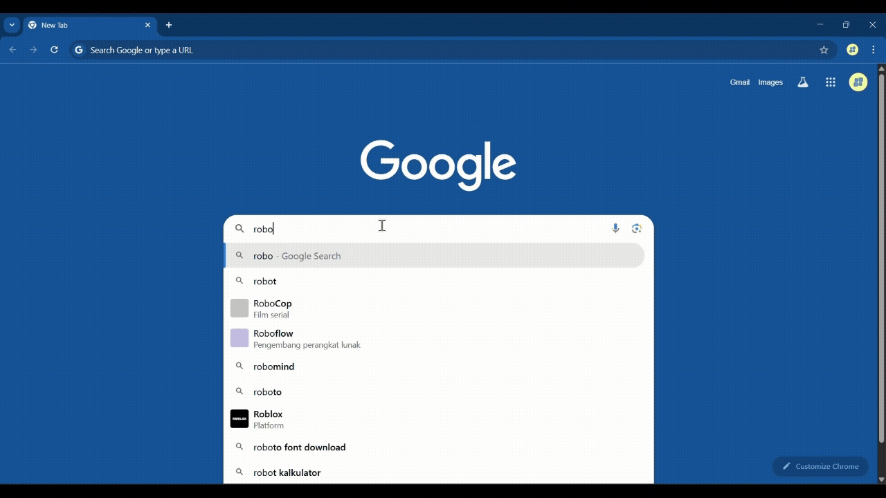
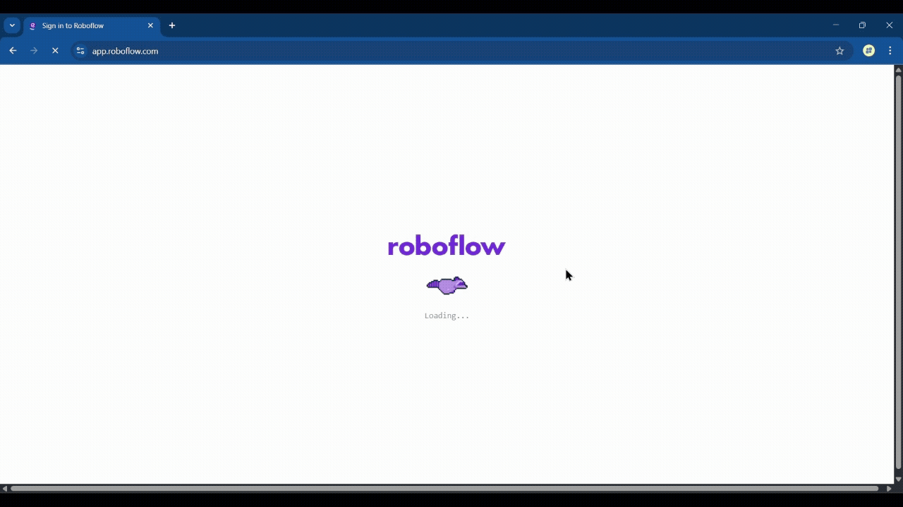
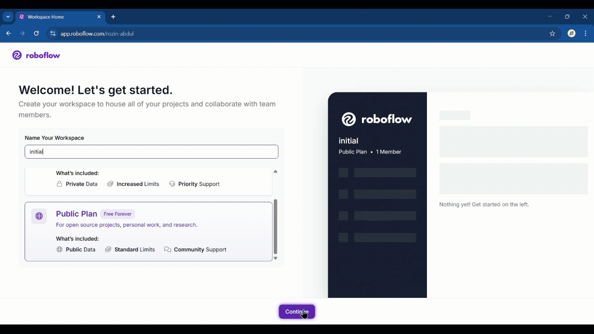
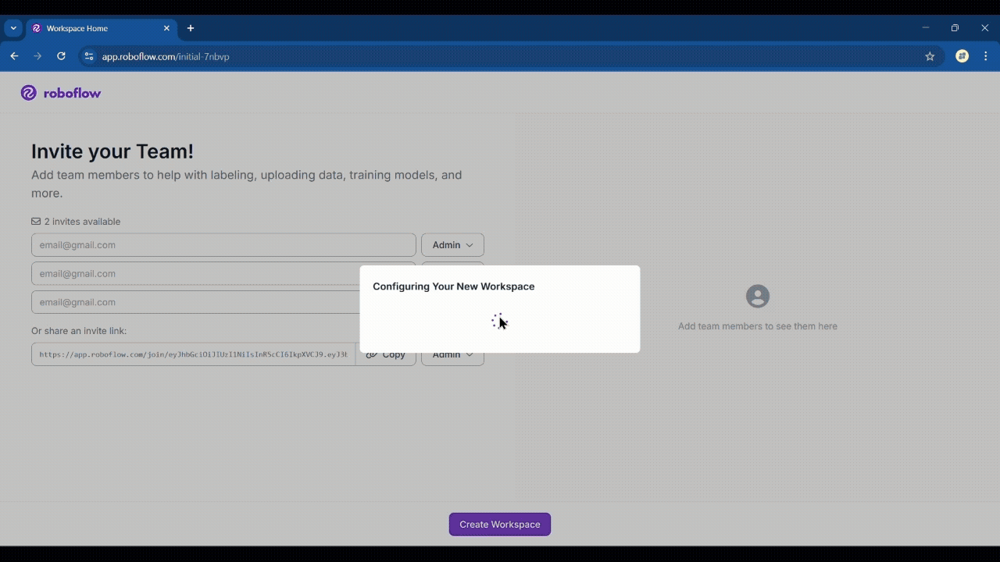

Membuat Akun Roboflow untuk Proyek Pembelajaran Mesin
Selamat datang! Modul ini akan memandu kamu langkah demi langkah dalam membuat akun Roboflow. Roboflow adalah sebuah platform yang sangat berguna untuk proyek pembelajaran mesin, khususnya yang melibatkan data gambar. Dengan Roboflow, kamu bisa mengelola, memberi anotasi, dan mempersiapkan dataset gambar dengan mudah, bahkan jika kamu seorang pemula. Ayo kita mulai!
Pilih Format Tutorial
-
Menuju Situs Roboflow
Buka peramban (browser) dan ketik "roboflow" pada kolom pencarian Google. Klik tautan yang berada paling atas untuk masuk ke halaman utama Roboflow.
 -
Mendaftar dengan Akun Google
Pada halaman utama, klik tombol "Sign In" di pojok kanan atas. Pilih "Continue with Google". Pilih akun Google yang akan kamu gunakan. Ikuti proses verifikasi hingga pendaftaran selesai.

-
Menyetujui Ketentuan Layanan
Setelah proses pendaftaran, kamu akan diarahkan ke halaman persetujuan. Centang kotak "I accept Terms of Service and Privacy Policy" , lalu klik "Continue".

-
Membuat Workspace Awal
Halaman "Welcome, Let's get started" akan muncul. Pada bagian "Choose a Plan", pilih Public Plan karena ini adalah paket gratis yang ideal untuk memulai proyek pembelajaran. Isi kolom "Name Your Workspace" dengan nama yang kamu inginkan (misalnya, nama proyek kamu). Klik "Continue".
 -
Berbagi Workspace dengan Tim (Opsional)
Kamu akan melihat halaman yang mengajak kamu untuk membagikan workspace. Ini berfungsi jika kamu ingin berkolaborasi dengan orang lain. Kamu bisa klik "Copy" untuk menyalin tautan dan membagikannya. Jika kamu tidak ingin membagikan, langsung saja klik "Create Workspace".
 -
Akun Siap Digunakan!
Selamat! Akun Roboflow kamu sudah selesai dibuat dan siap digunakan.
 -
Mengeksplorasi Dataset Publik
Untuk melihat data yang sudah dibuat oleh pengguna lain, kamu dapat klik tombol "Explore" di bilah navigasi. Kamu akan diarahkan ke tab baru yang berisi berbagai dataset publik. Di sini kamu bisa mencari data gambar yang sudah diberi anotasi (tanda) oleh orang lain untuk referensi atau penggunaan lebih lanjut.

Penutup
Selamat, kamu sudah berhasil membuat akun Roboflow! Dengan akun ini,
kamu siap untuk memulai proyek pembelajaran mesin kamu sendiri. Dari
sini, kamu bisa mengunggah data gambar, melakukan anotasi, hingga
menyiapkan dataset yang sudah siap digunakan untuk melatih model.
Modul ini adalah langkah awal yang solid. Silakan eksplorasi
lebih jauh fitur-fitur lain yang ditawarkan Roboflow untuk
memaksimalkan proyek kamu. Semoga berhasil!